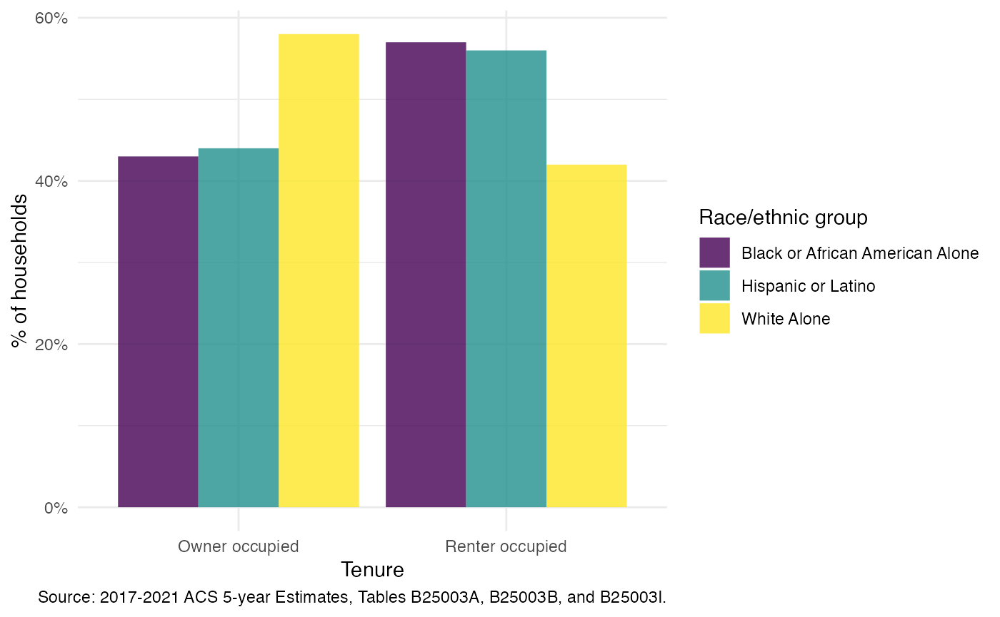

This package is designed to build on the tidycensus package to make it easier to create reproducible reports by allowing users to:
- Download multiple tables with
get_acs_tables() - Download multiple geographies and tables with
get_acs_geographies() - Download multiple years and tables with
get_acs_ts()
All of these functions use the label_acs_metadata() to
join the variables to detailed pre-computed table and
column metadata available on GitHub from the open-source Census Reporter project. This
metadata includes a parent column ID that supports the conversion of
estimate and margin of error values into a percent share of the
corresponding total. The function also uses the
race_iteration reference to add a name of the racial or
ethnic group as a column where appropriate.
Using get_acs_tables()
Get the race iteration tables for a tenure status table using a county level geography:
tenure_tables <- acs_table_race_iteration("B25003")[c(2, 3, 10)]
tenure_data <- get_acs_tables(
geography = "county",
state = "MD",
county = "Baltimore city",
table = tenure_tables
)Filter out the totals and create a simple bar chart to compare the data across tables:
tenure_data |>
filter_acs(indent > 0) |>
select_acs_cols("race_iteration_group") |>
ggplot(aes(x = column_title, y = perc_estimate, fill = race_iteration_group)) +
geom_col(alpha = 0.8, position = "dodge") +
scale_y_acs_percent("% of households") +
scale_fill_viridis_d("Race/ethnic group") +
labs_acs_survey(table = tenure_tables, x = "Tenure")
Using get_acs_geographies()
Get both county and state level geography for a population table:
multigeo_acs_data <- get_acs_geographies(
geography = c("county", "state"),
state = "MD",
county = "Baltimore city",
table = "B01003"
)Drop the column title (the table contains only a single variable) and
use the rowname_col parameter to group by the name of the
area. fmt_acs_county() is a helper function to strip the
text “, Maryland” from the end of the name of “Baltimore city”.
multigeo_acs_data |>
select_acs_cols(column_title_col = NULL) |>
gt_acs(
rowname_col = "NAME",
est_col_label = "Population"
) |>
fmt_acs_county(state = "Maryland")| Population | |
|---|---|
| Baltimore city | 592,211 |
| Maryland | 6,148,545 |
| Source: 2017-2021 ACS 5-year Estimates. | |
Using get_acs_ts()
get_acs_ts() relies on a helper,
acs_survey_ts(), that identifies the non-overlapping,
comparable sample years for a specific ACS sample:
years <- acs_survey_ts("acs5", 2021)
years
#> [1] 2021 2016 2011The get_acs_ts() calls acs_survey_ts()
internally to return data for multiple years (warning you if a variable
is unavailable for a specific year or geography):
acs_ts_data <- get_acs_ts(
geography = "county",
state = "MD",
survey = "acs5",
year = 2021,
table = "B01003"
)
glimpse(acs_ts_data)
#> Rows: 72
#> Columns: 25
#> $ GEOID <chr> "24001", "24003", "24005", "24009", "24011", …
#> $ NAME <chr> "Allegany County, Maryland", "Anne Arundel Co…
#> $ variable <chr> "B01003_001", "B01003_001", "B01003_001", "B0…
#> $ column_id <chr> "B01003001", "B01003001", "B01003001", "B0100…
#> $ table_id <chr> "B01003", "B01003", "B01003", "B01003", "B010…
#> $ estimate <dbl> 68684, 584064, 850702, 92515, 33234, 172148, …
#> $ moe <dbl> NA, NA, NA, NA, NA, NA, NA, NA, NA, NA, NA, N…
#> $ perc_estimate <dbl> NA, NA, NA, NA, NA, NA, NA, NA, NA, NA, NA, N…
#> $ perc_moe <dbl> NA, NA, NA, NA, NA, NA, NA, NA, NA, NA, NA, N…
#> $ table_title <chr> "Total Population", "Total Population", "Tota…
#> $ simple_table_title <chr> "Total Population", "Total Population", "Tota…
#> $ subject_area <chr> "Age-Sex", "Age-Sex", "Age-Sex", "Age-Sex", "…
#> $ universe <chr> "Total Population", "Total Population", "Tota…
#> $ denominator_column_id <chr> NA, NA, NA, NA, NA, NA, NA, NA, NA, NA, NA, N…
#> $ topics <chr> "{\"age\",\"sex\"}", "{\"age\",\"sex\"}", "{\…
#> $ line_number <dbl> 1, 1, 1, 1, 1, 1, 1, 1, 1, 1, 1, 1, 1, 1, 1, …
#> $ column_title <chr> "Total", "Total", "Total", "Total", "Total", …
#> $ indent <dbl> 0, 0, 0, 0, 0, 0, 0, 0, 0, 0, 0, 0, 0, 0, 0, …
#> $ parent_column_id <chr> NA, NA, NA, NA, NA, NA, NA, NA, NA, NA, NA, N…
#> $ denominator_estimate <dbl> NA, NA, NA, NA, NA, NA, NA, NA, NA, NA, NA, N…
#> $ denominator_moe <dbl> NA, NA, NA, NA, NA, NA, NA, NA, NA, NA, NA, N…
#> $ denominator_column_title <chr> NA, NA, NA, NA, NA, NA, NA, NA, NA, NA, NA, N…
#> $ geography <chr> "county", "county", "county", "county", "coun…
#> $ state <chr> "MD", "MD", "MD", "MD", "MD", "MD", "MD", "MD…
#> $ year <dbl> 2021, 2021, 2021, 2021, 2021, 2021, 2021, 202…Helper functions for ggplot2 include
scale_x_acs_ts() to set appropriate breaks:
acs_ts_data |>
filter_acs(
GEOID %in% c("24510", "24005", "24003", "24027", "24025", "24035")
) |>
ggplot(aes(x = year, y = estimate, fill = NAME)) +
geom_col(alpha = 0.8) +
facet_wrap(~NAME) +
scale_y_acs_estimate("Population") +
scale_x_acs_ts(survey = "acs5", year = 2021) +
scale_fill_brewer(type = "qual", guide = "none")